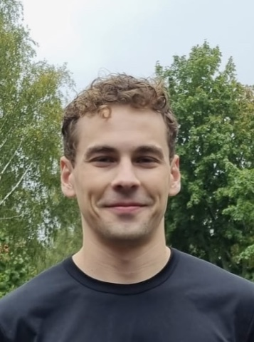
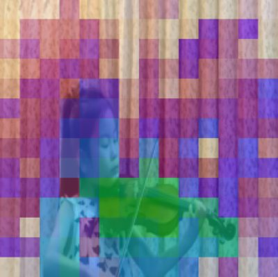

Benjamin Robson
Machine learning researcher at Aalto University, working on self-supervised and multimodal representation learning, supervised by Arno Solin.
Previously a software engineer at Apple, Instagram, WhatsApp, Microsoft Research, and a few startups.

Publications
2026

AV-JEPA: Extending LeJEPA to Audio-Visual Self-Supervised Learning
An early-fusion transformer with modality dropout as masking: no decoder, no EMA teacher, no contrastive negatives. Accepted at the Machine Learning for Audio workshop at ICML 2026.